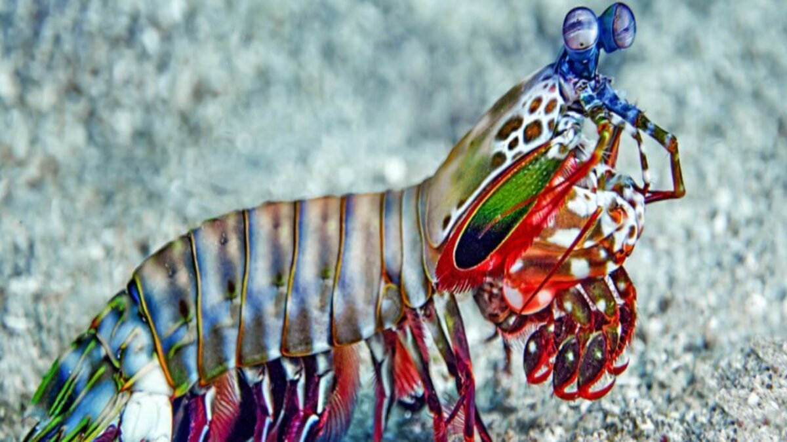

Fatos sobre o Stomatopoda
Origem
Stomatopoda (Odontodactylus scyllarus), chamados popularmente de tamarutacas ou de lacraias-do-mar no Brasil, é uma ordem de crustáceos marinhos da subclasse Hoplocarida, que agrupa cerca de 400 espécies, caracterizadas principalmente pela morfologia da segunda pata torácica, que é modificada em apêndice subquelado, lembrando uma pata de louva-a-deus.
| Reino; |
Animalia;
|
| Filo |
Arthropoda
|
| Subfilo |
Crustacea
|
| Subclasse |
Hoplocarida
|
| Ordem |
Stomatopoda
Latreille, 1817 |
Fatos Interessantes
Sua força
Esse pequeno ser marinho possui o soco mais forte já desvendado no mundo animal(Cerca de 80km/h). Relativo à velocidade de uma bala de calibre 22 e ataca com a força de 1.500 newtons, esse animal é capaz de matar suas presas até quando erra seu golpe.
Beleza
A ordem estomatópode, a qual a Lagosta Louva a Deus Palhaço está classificada, tem como característica morfológica a segunda pata torácica modificada parecida com a de um louva deus. Além disso, é extremamente colorida, o que a torna bela, única e associada com palhaços.

Visão
Além de forte e bela, esta espécie de crustáceo ainda possui mais uma curiosidade que vai te deixar de queixo caído: O seu sistema visual, que tem chamado atenção de cientistas e pesquisadores, é o mais complexo de todo o reino animal. Contando com 16 cones é capaz de ver dez vezes mais cores do que nós, seres humanos, que possuímos apenas 3 cones. Além de detectar o espectro visível, ainda é capaz de detectar o infravermelho e a ultravioleta. Estudos ainda estão sendo realizados para comprovar o real uso das informações visuais por esses animais, mas o que já sabemos nos mostra como são incríveis.